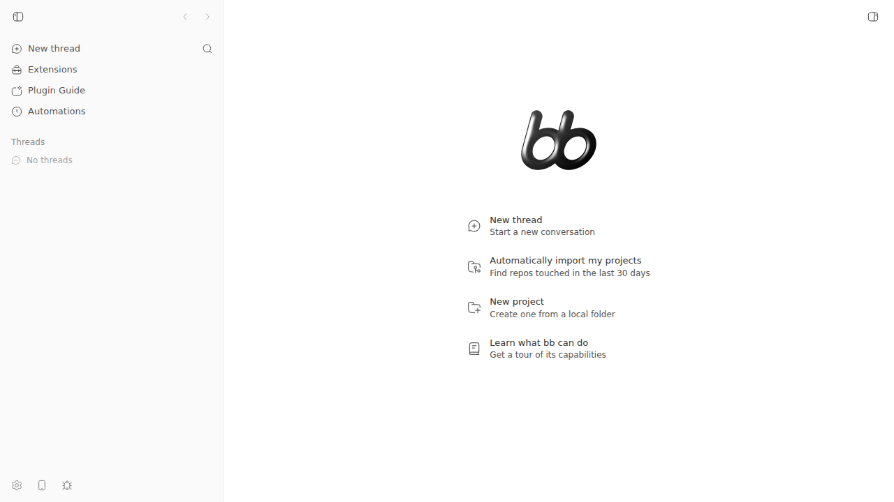
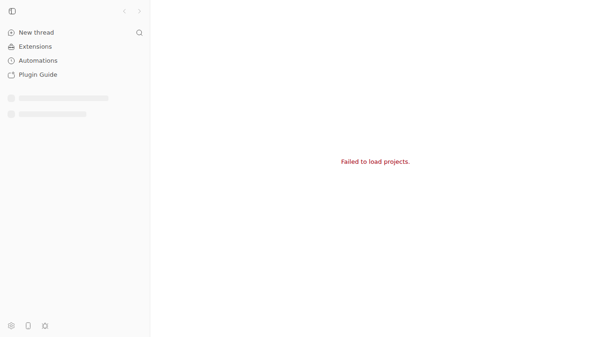

#2533 · Desktop cold start can leave the shell on a terminal “Failed to load projects.” error
Verdict: REPRODUCED · Root-cause confidence: high
1. TL;DR
A short sidebar API outage makes the app show “Failed to load projects.” as a terminal state.
The browser stopped all sidebar requests at 3.048 seconds. The API outage ended at 8 seconds.
The error remained at 11 seconds, after focus and network lifecycle events.
A later project event invalidated the query and recovered the app immediately.
2. Claims vs findings
| Claim from the issue | Status | Evidence |
|---|---|---|
| An eight-second startup outage can leave the shell on a terminal error. | Verified | The real app still showed the error at 11.004 seconds. See the browser log. |
| Focus, visibility, page, and online events do not recover the query. | Verified | The request count stayed at seven after all four events. The observer test also saw no new request. |
| The generic retry cycle permits an initial request and two retries. | Verified | The code stops when failureCount >= 2. The focused test saw three calls. |
| The full app always makes only three total bootstrap requests. | Refuted | This dev build made seven requests because later observers started more cycles. All requests still stopped by 3.048 seconds. |
| A server HTTP error receives no retry. | Verified | The retry helper rejects both HttpError classes. The red 503 test received false. |
| An unrelated project event can recover the app. | Verified | A real project-created event caused a successful refetch. The new project then appeared in the shell. |
| A large macOS data directory causes the natural startup outage. | Unverified | This run used Linux and an injected browser outage. It did not use the reported macOS database. |
| The issue is not data loss. | Verified | The API returned the same stored project before and after the browser error. See the project evidence. |
3. Environment
- bb 0.40.0 at
ad79bbb5ec909524f8f281e62d860c588a86f332. - Linux 7.0.0-29-generic on x86-64.
- The dev launcher used Node 22.23.2. The shell used Node 24.18.0 and pnpm 9.15.0.
- Headless Chrome 152.0.7977.64 used a 1280 by 720 viewport.
- App
http://localhost:12207; serverhttp://localhost:20207; host daemon127.0.0.1:28207. - Data directory
~/.bb-dev/tmp-bb-report-2533-revise-uitd93-6cb637f7f839. - Codex, Claude Code, Pi, Cursor, and Grok Build were present. The test used no provider.
4. Minimal reproduction
-
Prepare an isolated base checkout.
git clone https://github.com/get-bb/bb.git /tmp/bb-2533-repro cd /tmp/bb-2533-repro git checkout --detach ad79bbb5ec909524f8f281e62d860c588a86f332 pnpm install --frozen-lockfile --prefer-offline pnpm exec turbo run build scripts/bb-dev-app current scripts/bb-dev-app status
-
Install doobie and download the saved script.
npm install -g doobie doobie install curl -fsSL \ https://get-bb.github.io/reports/issues/2533/repro/sidebar-bootstrap-terminal-repro.js \ -o /tmp/sidebar-bootstrap-terminal-repro.js
Saved script: sidebar-bootstrap-terminal-repro.js.
-
Read the isolated app URL and run the script.
APP_URL="$(scripts/bb-dev-app status | sed -n 's/^App: //p')" APP_URL="$APP_URL" DOOBIE_BROWSER=issue-2533-repro \ node /tmp/sidebar-bootstrap-terminal-repro.js
-
Compare the result with this exact JSON output.
{ "appUrl": "http://localhost:12207", "outageMs": 8000, "failedAtMs": 3062, "finalAtMs": 11004, "finalHasError": true, "lifecycleEventsAtMs": 9004, "sidebarRequestCount": 7, "socketConnectedAtMs": 1385, "socketConnectedBeforeQueryError": true, "requestLog": [ { "action": "fail", "elapsedMs": 1369 }, { "action": "fail", "elapsedMs": 1376 }, { "action": "fail", "elapsedMs": 1638 }, { "action": "fail", "elapsedMs": 1893 }, { "action": "fail", "elapsedMs": 2489 }, { "action": "fail", "elapsedMs": 2796 }, { "action": "fail", "elapsedMs": 3048 } ], "socketLog": [ { "elapsedMs": 1378, "event": "created", "requestId": "1424956.1342", "url": "ws://localhost:20207/ws" }, { "elapsedMs": 1385, "event": "connected", "requestId": "1424956.1342", "status": 101, "url": "ws://localhost:20207/ws" } ], "queryStatusLog": [ { "elapsedMs": 0, "status": "loading" }, { "elapsedMs": 3062, "status": "error", "evidence": "Failed to load projects." }, { "elapsedMs": 11004, "status": "error", "evidence": "Failed to load projects." } ], "textExcerpt": [ "New thread", "Extensions", "Plugin Guide", "Automations", "Settings", "Remote access", "Report a bug", "Failed to load projects.", "Toggle Sidebar" ] }
Expected and actual result
Expected: The shell loads when /api/v1/sidebar-bootstrap becomes available after 8000 ms. Actual: The shell shows "Failed to load projects." at 3062 ms. It still shows that error at 11004 ms. Lifecycle events start no new request.


Focused query test
The focused test uses the real query client policy. It proves that only an invalidation recovers the query.
Saved test: issue-2533-repro.test.ts.
// @vitest-environment jsdom
import { QueryObserver } from "@tanstack/react-query";
import { afterEach, describe, expect, it, vi } from "vitest";
import { createAppQueryClient } from "@/lib/query-client";
import { sidebarNavigationQueryKey } from "./query-keys";
describe("issue 2533 sidebar bootstrap recovery", () => {
afterEach(() => vi.restoreAllMocks());
it("leaves the failed bootstrap terminal until a realtime invalidation", async () => {
const queryClient = createAppQueryClient({
shouldRefetchOnWindowFocus: () => false,
showMutationErrorToasts: false,
});
queryClient.mount();
const queryFn = vi.fn<() => Promise<string>>()
.mockRejectedValueOnce(new TypeError("Failed to fetch"))
.mockRejectedValueOnce(new TypeError("Failed to fetch"))
.mockRejectedValueOnce(new TypeError("Failed to fetch"))
.mockResolvedValue("projects loaded");
const observer = new QueryObserver(queryClient, {
queryKey: sidebarNavigationQueryKey(), queryFn, staleTime: Infinity,
});
const unsubscribe = observer.subscribe(() => {});
await vi.waitFor(() => expect(observer.getCurrentResult().isError).toBe(true));
expect(queryFn).toHaveBeenCalledTimes(3);
window.dispatchEvent(new Event("focus"));
window.dispatchEvent(new Event("pageshow"));
window.dispatchEvent(new Event("online"));
expect(queryFn).toHaveBeenCalledTimes(3);
await queryClient.invalidateQueries({ queryKey: sidebarNavigationQueryKey() });
await vi.waitFor(() => expect(observer.getCurrentResult().data).toBe("projects loaded"));
expect(queryFn).toHaveBeenCalledTimes(4);
unsubscribe();
queryClient.unmount();
});
});
pnpm exec vitest run src/hooks/queries/issue-2533-repro.test.ts --reporter=verbose PASS leaves the failed bootstrap terminal until a realtime invalidation Test Files 1 passed (1) Tests 1 passed (1)
The red policy test also failed on both missing behaviors.
5. Root cause
5.1 The sidebar query inherits a narrow retry policy
The app default allows two retries. It retries only transport-like errors.
Both HTTP error classes return false, including 408, 429, and all 5xx responses.
const TRANSIENT_READ_RETRY_COUNT = 2;
export const TRANSIENT_READ_RETRY_DELAY_MS = 250;
if (error instanceof HttpError || error instanceof BbHttpError) {
return false;
}
if (failureCount >= TRANSIENT_READ_RETRY_COUNT) {
return false;
}
Source: query-helpers.ts lines 63–93.
The sidebar query adds only the static cache policy. It supplies no retry rule.
return useQuery<SidebarBootstrapResponse>({
queryKey: sidebarNavigationQueryKey(),
queryFn: async ({ signal }) => { ... },
enabled,
...REALTIME_OWNED_STATIC_CACHE_QUERY_POLICY,
placeholderData: () => readCachedSidebarBootstrap() ?? undefined,
});
Sources: sidebar-navigation-query.ts lines 34–60 and query-policies.ts lines 62–64.
5.2 The initial socket repair has a race
The first socket connection tries to refetch active queries that already have an error.
It then invalidates only queries that already have data from before the connection.
refetchErroredRealtimeQueriesOnInitialConnect({ queryClient });
invalidateRealtimeQueriesFetchedBeforeInitialConnect({
connectedAt: Date.now(),
queryClient,
});
Source: realtime-cache-effects.ts lines 614–629.
The app realtime socket connected at 1.385 seconds. The sidebar query showed its error at 3.062 seconds.
The one-time error check therefore found nothing. The no-data query also failed the later dataUpdatedAt !== 0 test.
Source: system-cache-effects.ts lines 99–135.
5.3 Normal lifecycle events cannot repair the later error
The app blocks focus and reconnect refetches while the socket stays connected.
shouldRefetchOnWindowFocus: () => wsManager.getConnectionState() !== "connected",
Source: main.tsx lines 32–40.
The error branch has no retry control. It replaces the main content when no project data exists.
if (!projects && sidebarNavigationError) {
return (
<PageShell contentClassName="min-h-full items-center justify-center">
<p className="py-12 text-center text-sm text-destructive">
Failed to load projects.
</p>
</PageShell>
);
}
Source: RootComposeView.tsx lines 1908–1920.
5.4 A later project event repairs the query by chance
A project change invalidates the sidebar query key. That invalidation starts a new request.
Sources: realtime-cache-registry.ts lines 592–624 and cache-invalidation-groups.ts lines 43–48.
The live run confirmed this path with a real project-created event.
6. Proposed fix (first principles)
- Add a sidebar-specific retry policy in
sidebar-navigation-query.ts. - Retry transport errors, 408, 429, and 5xx responses.
- Use exponential delays with a four-second cap.
- Keep a low-rate retry after the first budget if the query has no data.
- Add a Retry button that calls the query
refetchfunction. - Do not retry 401, 403, 404, or response parse errors automatically.
A six-retry budget alone covers about 12 seconds. It does not meet the stated “until the server answers” behavior.
The low-rate retry or the Retry button prevents another terminal state after that budget.
Tests must cover an eight-second transport outage, a temporary 503, a permanent 401, and the initial socket race.
This app-only fix changes no server-daemon message. It needs no host daemon protocol version change.
Risk: A permanent retryable 5xx can create request noise. Use the four-second cap and pause retries while the document stays hidden.
7. Related issues
- #2480 covers a pre-window desktop launcher failure.
- #1302 covered sidebar payload size and broad refetch cost.
- #1676 covered reload flashes in other app surfaces.
These issues do not describe a completed bootstrap failure that remains terminal.
8. Appendix
Artifacts
- Browser request log
- Project event recovery record
- Focused test output
- Red policy test output
- Earlier matching evidence at the same base
Commands run
gh issue view 2533 --comments gh issue view 2533 --repo get-bb/bb --comments --json ... pnpm install --frozen-lockfile --prefer-offline pnpm exec turbo run build scripts/bb-dev-app current scripts/bb-dev-app status curl http://localhost:20207/api/v1/sidebar-bootstrap APP_URL=http://localhost:12207 DOOBIE_BROWSER=issue-2533-revise node \ /tmp/bb-reports/issues/2533/repro/sidebar-bootstrap-terminal-repro.js pnpm exec vitest run src/hooks/queries/issue-2533-repro.test.ts --reporter=verbose pnpm exec vitest run src/hooks/queries/sidebar-bootstrap-startup.repro.test.ts git fetch origin main git log ad79bbb5ec90..origin/main -- <relevant paths>
Later-main check
Origin main was fbc556d7777518be4fdae58268c415344de79462 at the final check.
No later commit changed the relevant retry, query, socket, or error-view paths.
Pull request review
The issue has no linked open pull request. No pull request review was required.
Verification
The verifier ran the original command and found the fixed port 12145. That command returned ERR_CONNECTION_REFUSED.
The verifier changed the port and reproduced seven failed requests and the terminal error.
The verifier also reran the focused test, both red policy tests, and the later-main check.
This revision reads APP_URL from the environment. It also gives exact checkout, doobie, and run commands.
The new browser log records the socket, request, and query order. The new API evidence verifies that stored project data remained.